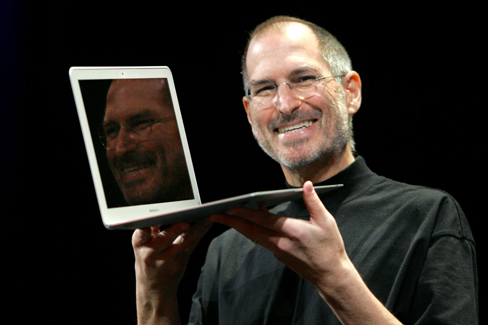
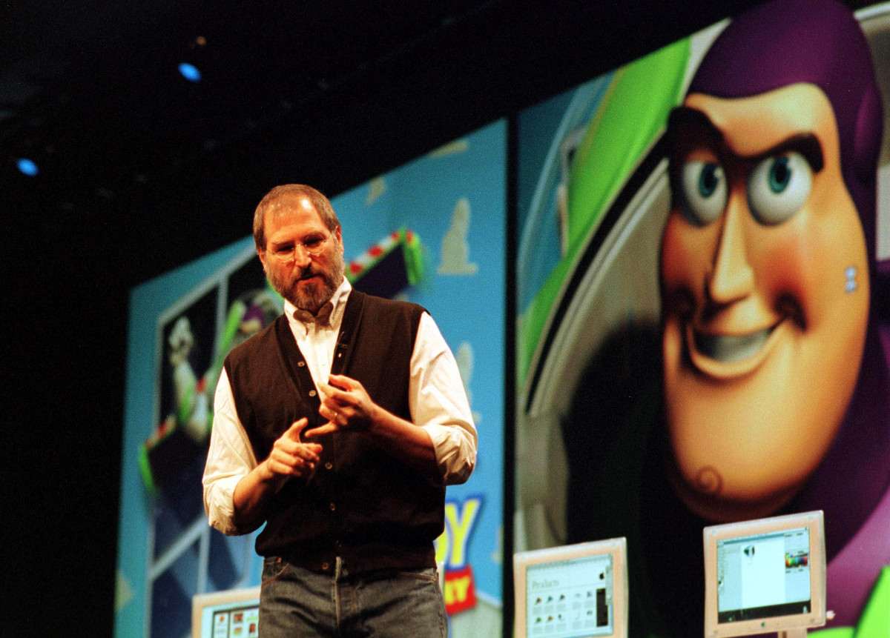

Steve Jobs'un biyografisine kısa bir bakış
Gece Modu
Emir Muhammed Muhammedi Karabağ
Steve Powell Jobs 24 Şubat 1955'te San Francisco'da doğdu.Üvey babası Powell, 183 cm boyunda dövmeli bir motor tamircisi ve üvey annesi Clara Hagopian, iki Ermeni göçmenin oğluydu.Steve, üvey babasıyla birlikte ve üvey annesi, Santa Clara County'de yaşıyordu ve Silikon Vadisi olarak bilinen yerde yaşıyordu.
Teknolojiye ılgı
Üvey babası hurda arabalar alır, tamir eder, satar ve evin etrafındaki teknik işleri yapardı ama Steve araba tamir etmeyi sevmezdi ve ellerini kirletmeyi sevmezdi, bu yüzden ilgilendiği bir Teknoloji dalına katıldı. Steve, HP şirketinin teknolojileriyle ilgileniyordu ve tüm bunlar bilgisayarlara daha fazla ilgi duymasına neden oldu, bu yüzden genç Jobs, kendisi gibi teknolojiyi seven Steve Wozniak ile tanıştı.Wazniak tijaret konusunda yetenekli değildi ama çok iyi bir programcıydı , Steve Reed Üniversitesi'ne girdi ama üniversiteye ilgi göstermedi, bu yüzden bir dönem sonra bıraktı.Bir süre sonra Atari'de çalışmaya başladı.
Apple'ın kuruluşu
Wozniak, Altair 8800 bilgisayarıyla tanıştığında kendi bilgisayarını yapmayı düşündü.Sonra 1976'da Jobs ve Wazniak, Jobs'un babasının evinin garajında Apple'ı kurdular.Aslında bilgisayar kartlarını toplayıp bilgisayar satıcılarına sattılar.Daha sonra, Steve'in iş hayatında sahip olduğu yetenekle Intel'in üst düzey yöneticilerinden birini Apple'a 250 bin dolar yatırım yapmaya ikna etmeyi başardı ve bu Apple'ın kurucularının milyoner olmasına neden oldu.1981'de Steve Macintosh adında bir proje yarattı. Makul bir fiyata sahip küçük bir bilgisayardı ve bu cihazı tasarlamak ve inşa etmek üç yıl sürdü.Macintosh başarılı olmadı.Başarısızlığın nedeni, Pepsi Company'de şekerli su satan Apple'ın o zamanki CEO'su John Scully idi. 1985 yılında. Yönetim kurulu Steve'in tüm yetkilerini aldı, bu yüzden Jobs Apple'dan ayrıldı ve Apple'daki tüm hisselerini sattı, NeXT'yi kurdu ve birkaç Apple çalışanını işe aldı, ancak bu şirket başarılı olmadı.
iPod ve Pixar
Biraz sonra Steve, Lucasfilm'in grafik kısmını satın aldı ve adını Pixar koydu.Pixar, Disney ile sözleşme imzalayana kadar iyi durumda değildi ve Toy Story animasyonundan sonra Pixar'ın durumu 180 derece döndü.Aynı zamanda Apple'ın durumu Apple yani Gil Emilio, NeXT'yi 400 milyon dolara satın alarak Jobs'ın Apple'a dönmesini sağlamış ve 700 milyon dolarlık mali kaybın ardından Emilio Jobs geçici olarak Apple'ın CEO'su olmuştur.1998 yılıydı. iMac bilgisayar Apple tarafından tanıtıldı ve İki yıl sonra Apple, özel işletim sistemi Mac OS X'i tanıttı. O zaman Jobs artık geçici CEO değildi ve resmi olarak Apple'ın CEO'su oldu.Jobs gençlerin ilgisini fark etmişti. müzik ve sanatçıların haklarına saygı duyulması gereken bir müzik abonelik hizmeti başlatmak istedim, bu yüzden iTunes tanıtıldı ve bir süre sonra cebinizde binlerce müzik sloganıyla iPod adı verilen küçük bir cihaz tanıtıldı. müzik çalarlar alanında devrim.
iPhone'u Tanıtmak
Steve uzmanlardan oluşan bir ekip kurmuştu ve gizli bir proje üzerinde çalışıyorlardı.Küçük bir şirket kapasitif bir dokunmatik ekran icat etmeyi başarmıştı, Apple sessizce satın aldı ve Steve bu tür bir ekranı cep telefonlarında kullanmaya karar verdi. 2007, Jobs, Apple'ın cep telefonları alanındaki devrim niteliğindeki ürünü olan iPhone'u tanıttı. Bu durumda Pankreas kanserine yakalanan Jobs, uzun yaşayamayacağını biliyordu ve halefi olarak Tim Cook'u (Apple'ın şu anki CEO'su) seçti.Steve Jobs 5 Ekim 2011'de öldü.